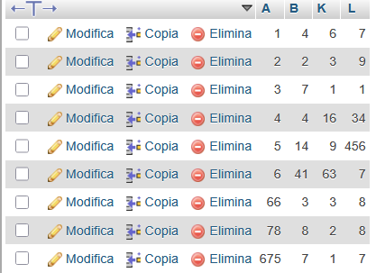

A dataset is a structured collection of data organized and stored together for analysis or processing. The data within a dataset is typically related in some way and taken from a single source or intended for a single project. For example, a dataset might contain a collection of business data (sales figures, customer contact information, transactions, etc.). A dataset can include many different types of data, from numerical values to text, images or audio recordings. The data within a dataset can typically be accessed individually, in combination or managed as a whole entity.
Datasets are a fundamental tool in data analytics, data analysis and machine learning (ML), providing the data upon which analysts draw insights and trends. They are essential to ML because selecting the suitable dataset for an ML project is one of the most crucial initial steps of successfully training and deploying an ML model.
There’s also often confusion between the terms dataset and database. While a database and a dataset are both related terms used to describe the organization and management of data, they differ in several meaningful ways:
As defined in the first section, a dataset is a collection of data used for analysis and modeling and typically organized in a structured format. That structured format could be an Excel spreadsheet, a CSV file, a JSON file or other formats. The data in a dataset can be organized in multiple ways and created from a wide variety of sources, such as a customer poll, an experiment or an existing database. A dataset can be used for many purposes, including training and testing machine learning models, data visualization, research or statistical analysis. Datasets can be shared publicly or privately. A dataset is typically smaller in size compared to a database.
A database is designed for long-term storage and management of large amounts of organized data that is stored electronically, allowing the data to be easily accessed, manipulated and updated. In other words, a database is an organized collection of data stored as multiple datasets. Many different types of databases exist, including relational databases, document databases and key-value databases.
A dataset could include numbers, text, images, audio recordings or even basic descriptions of objects. A dataset can be organized in various forms including tables and files. A few examples of datasets include:
A data distribution is a function or a listing which shows all the possible values (or intervals) of the data. It also (and this is important) tells you how often each value occurs. Often, the data in a distribution will be ordered from smallest to largest, and graphs and charts allow you to easily see both the values and the frequency with which they appear.
From a distribution you can calculate the probability of any one particular observation in the sample space, or the likelihood that an observation will have a value which is less than (or greater than) a point of interest.
The function of a distribution that shows the density of the values of our data is called a probability density function, and is sometimes abbreviated pdf.
There are some statistical distributions that come up so often they have received their own names; One of these is the bell-shaped curve, also called the normal distribution. When graphed (from smaller to greater, with frequency that values occur being graphed on the y axis) it looks something like a tidy bell shape, with tails on both sides. The graph is continuous; which means every point is included, and there are no discontinuities between points. It is also symmetric over a central point (the mean).
The normal distribution is actually an infinite family of distributions (each fully defined by unique means and standard deviation) rather than just one, but they share many of the same properties.
The DBMS has the following attributes: A, B, K, L. A is the primary key and they all are integers.
The univariate distribution where K <= 3 can be obtained by using the function COUNT() together with GROUP BY (K).
The bivariate distribution where K <= 3 and B > 5 can be obtained by using COUNT() and GROUP BY (K, B).
Insert English text. You can calculate distribution, encrypt, auto-decode (frequency analysis), or manually decode any shift.